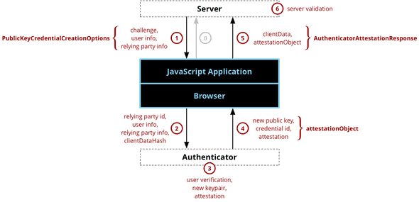
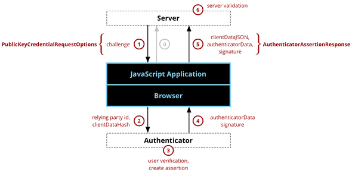

一些前端认证技术
比较新的认证方案
Web Authentication
Web Authentication 仅在安全上下文 (HTTPS) 中可用
Web Authentication 一般用于辅助验证 (两步验证) 单独使用的话用户数据会直接和认证设备绑定...设备丢了数据就寄了
update: 2023.7.22 最近这个概念似乎有点热, GitHub 以及支持这种认证方案, Apple 也全面支持该方案了
Web Authentication API 是一种新的验证模式, 其允许网站调用计算机的 PIN, 生物特征 (如指纹或面部识别) 识别器或硬件令牌 (如USB密钥) 来验证用户身份，而无需依赖传统的用户名和密码组合. 例如在用户可以通过 Windows Hello 扫脸直接登陆网站
Web Authentication API 的主要目标是替代传统的用户名和密码登录方式, 以解决密码泄露, 弱密码和重复密码使用等安全隐患. 通过采用公钥加密和生物特征识别技术, Web身份验证API提供了更高的安全性和用户友好性. 可以在这个网站尝试使用 Web Authentication API
基本流程
注册

客户端请求服务器用户希望注册凭据, 一般包括用户名 (非 Web Authentication 标准)
服务器返回构建密钥所需信息, 包含
- 一个 "挑战" (Challenge): 一般是一个大随机数
- 一个
pubKeyCredParams: 包含服务端希望的加密算法优先级 (例如:[EdDSA, SHA-256]就是希望使用EdDSA如果不行就用SHA-256) authenticatorSelection: 允许使用的认证器类型attestation: 是否需要来自认证器的证明
这步仍然不是 Web Authentication 标准规定的
客户端基于传回的
authenticatorSelection选择认证器. 向认证器调用authenticatorMakeCredential并传入服务器回传的信息认证器先要求用户完成一次某种形式的认证 (PIN, 指纹, 面容) 以确认用户正在操作并同意注册
认证器向浏览器推送一个公钥凭据对象, 该公钥对象上包含了用于证明公钥与认证器私钥匹配的签名
客户端获取数据并构造
PublicKeyCredential, 其包含identifier: 标识符response: 认证器客户端请求的回应clientData: 凭据上下文, 包括挑战与发起请求的来源attestationObject: 证明信息 (如果第一步服务端有要求)
Web 服务器做验证
- 检查返回的 challange 与发出的 challange 是否匹配
- 检查发回数据与最初请求 challange 的源地址是否相同
- 检查服务器发回的证明是否足够
并关联凭据到用户
登录验证

- 客户端发起登录请求, 并携带一些可能的识别字段(用户名啥的)
- 服务端确定公钥, 生成一个挑战并构造可选的
PublicKeyCredentialRequestOptions, 其包括allowCredentials: 若客户端传入了用户名, 该字段返回该用户的凭据userVerification是否应该执行用户验证
- 浏览器调用
navigator.credentials.get()方法, 将服务器挑战和其他数据 (如允许的凭据列表) 转换为一个PublicKeyCredential请求参数对象 - 用户在其身份验证设备上验证自己的身份
- 设备响应, 浏览器接收到一个公钥凭据对象. 此对象包含一个签名, 证明设备具有与凭据公钥配对的私钥, 并且用户已经验证了自己的身份
- 客户端获取认证器创建的数据并构造
PublicKeyCredential, 包括:identifier: 标识符response: 认证器客户端请求的回应clientData: 凭据上下文, 包括挑战与发起请求的来源authenticatorData: 凭证, 签名, 签名计数器signature: 包含clientDataJSON与authenticatorData对象
- 服务器验证该凭据对象
代码实现:
let rawId = null; // store cert id (get it from server actually)
// registor
let challenge = window.crypto.getRandomValues(new Uint8Array(32));
let user = {
id: Uint8Array.from(window.atob("UZSL85T9AFC"), c=>c.charCodeAt(0)), // sample user id in Base64
name: "kairuiliu@msn.com",
displayName: "Kairui Liu",
};
let relyingParty = {
name: "Example Domain",
id: "example.com"
};
let credentialCreationOptions = {
challenge: challenge,
rp: relyingParty,
user: user,
// most device support -7 (ES256), but windows hello can only worked on -257 (RS256), you can aslo add -8 (EdDSA), but in most of cases -7 (and -257, if you want to use windows hello) is enough (https://github.com/w3c/webauthn/issues/1757)
pubKeyCredParams: [{alg: -7, type: "public-key"}, {alg: -257, type: "public-key"}],
timeout: 60000,
attestation: "direct"
};
navigator.credentials.create({publicKey: credentialCreationOptions})
.then((newCredentialInfo) => {
console.info(newCredentialInfo);
rawId = newCredentialInfo.rawId;
})
.catch((error) => {
console.error(error);
});
// verify
let challenge = window.crypto.getRandomValues(new Uint8Array(32));
let allowCredentials = [{
type: "public-key",
id: rawId,
// transports: ["usb", "nfc", "ble"] // do not write this config if you want to use build-in verifier. actually, it should be provided by server
}];
let credentialRequestOptions = {
challenge: challenge,
allowCredentials: allowCredentials,
timeout: 60000
};
navigator.credentials.get({publicKey: credentialRequestOptions})
.then((assertion) => {
console.info(assertion)
})
.catch((error) => {
console.error(error);
});还可以参考 google/webauthndemo
OAuth
OAuth (开放授权) 允许用户通过授权的方式授予第三方服务商使用其账户的部分权限与数据. 其设计的目的是通过一种更安全, 可扩展的方式完成授权而无需输入用户名密码. 例如: Reddit 允许用户从 Google Driver 上传图片, 微信从各种健康软件中拉取运动步数, 就使用了该特性
OAuth 的先进之处在于: 无需输入用户名密码 & 允许更细粒度的授权 (可以授权特定的权限或数据) & SSO
OAuth 分为 1.0 与 2.0 两个版本, 相比之下 2.0 流程更加简单, 更加安全, 扩展性更强
OAuth 授权流程可以分为 8 步
sequenceDiagram
participant Resource Owner
participant Client
participant Authorization Server
participant Resource Server
Client->>Authorization Server: 1. 发起授权请求
Authorization Server-->>Resource Owner: 2. 请求用户进行身份验证
Resource Owner-->>Authorization Server: 3. 提供凭据进行身份验证
Authorization Server->>Client: 4. 生成授权码
Client->>Authorization Server: 5. 使用授权码请求令牌
Authorization Server-->>Client: 6. 返回访问令牌
Client->>Resource Server: 7. 使用访问令牌请求资源
Resource Server-->>Client: 8. 返回受保护的资源在此, 我们需要明确四个术语, 以 reddit 希望访问 google driver 为例
- 资源所有者 (Resource Owner): 用户自己
- 客户端 (Client): Reddit 应用程序, 并不是浏览器
- 授权服务器 (Authorization Server): 指的是客户端的授权服务器, 也就是 reddit 的服务器
- 资源服务器 (Resource Server): 被访问资源的服务器, 即 Google Driver 服务器
具体流程为
- 客户端 (Client) 向授权服务器 (Authorization Server) 发起授权请求
- 授权服务器向资源拥有者 (Resource Owner) 发送请求，要求其进行身份验证
- 资源拥有者提供凭据进行身份验证
- 授权服务器生成授权码并将其发送给客户端
- 客户端使用授权码向授权服务器请求访问令牌
- 授权服务器返回访问令牌给客户端
- 客户端使用访问令牌向资源服务器 (Resource Server) 请求受保护的资源
- 资源服务器返回受保护的资源给客户端
OAuth2 PKCE (Proof Key for Code Exchange)
OAuth2 PKCE 是 OAuth2 的一个小加强, 主要为了解决 OAuth 2.0 第 4, 5 步授权码安全性问题. 其增强方法为:
- 在第 1 步发起授权请求时, 客户端生成随机的 Code Verifier，通过加密算法 (通常是 SHA-256) 计算 Code Challenge, 并携带 Code Challenge
- 在第 5 步客户端请求令牌时带上 Code Verifier
- 在第 6 步前, 服务端会校验 Code Verifier 与 Code Challenge 的匹配性
OpenID Connect
OpenID Connect 是一个标准的身份层, 其基于 OAuth 2.0 协议构建, 允许客户端验证用户身份, 以及获取用户基本的身份信息. 它允许用户使用一个帐户在多个网站进行身份认证, 而无需为每个网站创建新的帐户. 例如常见的 "使用 Google 账户登录" 就使用了这个技术
不过要区分 OpenID Connect 与 OAuth 2.0 的区别, OpenID 是借用其他账户登录某个账户, 而 OAuth 2.0 是授权访问三方账户. 可以通过以下例子理解
- OAuth 2.0: 通过 Reddit 访问 Google Driver 的数据. 在外卖小程序中调用微信中的收货地址
- OpenID: 使用 Google 账户登录 Reddit. 使用微信登录外卖 App
相比于传统的用户名密码认证方式, OpenID
- 增强安全性: 用户的密码只在身份提供商 (IdP) 上进行验证, 不再需要在每个应用中存储和验证, 减少了被攻击的可能性。
- 提升用户体验: 用户只需要记住一个帐户和密码, 就可以在多个网站进行身份认证, 不再需要为每个网站创建新的帐户.
- 简化开发: 开发者可以专注于应用本身的开发, 而将身份验证交给专门的身份提供商处理, 减轻了开发的负担。
流程
sequenceDiagram participant User participant Client participant IdP User->>Client: 发起登录请求 Client->>User: 重定向到 IdP User->>IdP: 输入凭据进行身份认证 IdP->>User: 返回身份验证成功和授权码 User->>Client: 使用授权码返回 Client->>IdP: 使用授权码获取访问令牌和 ID 令牌 IdP->>Client: 返回访问令牌和 ID 令牌 Client->>IdP: 可使用访问令牌获取用户信息
SAML (Security Assertion Markup Language)
SAML 是一种基于 XML 的开放数据验证格式, 允许安全域之间交换身份验证和授权数据. 它允许用户在一个地方进行身份验证, 并在另一个地方获取对资源的访问权限, 而无需再次进行身份验证. 可以将 SAML 理解另一种 OpenID 实现. 但是也有不同
- 协议层面
- 数据格式: SAML 基于 XML, OpenID 基于更加简洁的 JWT.
- 认证流程: 在 SAML 中 IdP 会响应带上包含用户信息的断言, 用户将断言发给 SP, SP 直接验证断言获取用户信息. 在 OpenID 中, SP 需要使用授权码向 IdP 询问用户信息
- 复杂性: SAML 更加复杂强大, 提供了更多的属性, 也相对安全
- 应用层面
- SAML 更多用于 B2B 场景, IdB 一般是用户所属的组织或企业, 所属组织维护用户信息, 并允许用户在自己组织完成认证访问第三方企业应用. SP 一般是 toB 应用 (例如 Zoom 的 SSO 登录)
- OpenID 更多用于 B2C 场景, IdB 一般是大型身份验证服务商 (谷歌, FB), SP 一般是 toC 应用 (例如 reddit 的使用谷歌账户登录)
认证流程
sequenceDiagram
User->>Service Provider: 请求资源
Service Provider->>User: 重定向到 IdP 进行身份验证
User->>Identity Provider: 提交身份验证信息
Identity Provider->>User: 验证成功，生成 SAML 断言
User->>Service Provider: 带有 SAML 断言的请求
Service Provider->>Service Provider: 验证 SAML 断言
Service Provider->>User: 提供资源比较常见的方案
基本逻辑都是客户端发送用户名密码, 服务端生成用户编码 (Session / Token), 客户端在后续请求时带上编码, 只不过编码方式, 请求方式不同罢了
Session-based Authentication
- sessionID 生成方式: 纯随机, 不包含用户信息
- 服务端验证: 服务端维护 sessionID 与用户信息的关系
- 存储 / 传输方式: Cookie
最传统的认证方式, 用户登录成功, 浏览器下发 token 到 Cookie, 每次请求的时候带上. 其与 JWT 的区别在于 JWT 的用户信息存储在 Token 中, 而 Session-based Authentication 是存储在服务器中
JWT
- Token 生成方式: 编码方式, 用户信息的 Hash
- 服务端验证: 在认证时将 Token 验证解码获取用户信息
- 存储 / 传输方式: 前后端协商
JWT (JSON Web Token) 用于安全的传输一个 JSON 对象. 由三部分组成
头部 (Header): 一般包括令牌类型与所使用的摘要算法, 例如
{ "alg": "HS256", "typ": "JWT" }载荷 (Payload): 包含了对用户的声明信息, 一般包括令牌发行者, 过期时间, 主题. 允许发行者自定义
签名 (Signature): 对前两部分信息的加密
JWT 是可读不可伪造的, 其头部与载荷一般是 Base64 加密的, 因此任何获取 JWT 的人都可以解码, 但是由于签名部分对载荷做了摘要, 而摘要算法只存储在服务端, 因此无法伪造.
在认证中, 服务端一般将用户名与过期时间放入载荷加密, 之后客户端只需要携带加密后 JWT 即可.
Bearer 认证
- sessionID 生成方式: 可以随机也可以使用 JWT 等方案
- 服务端验证: 生成方式不同, 服务端可能维护 sessionID 与用户信息的关系
- 存储 / 传输方式: 前后端协商
可以将 JWT 看作 Bearer 认证的一种形式, Bearer 认证从服务端获取 Token, 在请求时携带, 没有更多要求...
远古方案
HTTP 基本认证 (Basic Authentication)
这是一种非常原始的认证模式, 用户通过直接与浏览器对话框交互完成认证
当用户访问需要认证的资源时, 服务端会返回一个 401 Unauthorized 的响应, 并在响应头中附带 WWW-Authenticate 字段, 通知客户端需要进行认证. 当客户端收到 401 响应后, 会出现一个对话框, 提示用户输入用户名和密码. 用户输入后, 浏览器将用户名和密码拼串 (user:passwd) 使用 base64 进行编码, 然后将这个编码后的字符串放在 Authorization 请求头中, 然后重新发送请求.
sequenceDiagram
Browser->>Server: 访问敏感数据
Server-->>Browser: 返回401，需要认证
Browser->>User: 弹出认证对话框
User->>Browser: 输入用户名和密码
Browser->>Server: 发送带有用户名和密码的请求
Server-->>Browser: 认证成功，返回资源
Browser->>User: 显示请求的资源可以看到, HTTP 基本认证
- 并不安全: 用户名和密码不加密就发送出去了
- 无法保持登录: 需要用户在请求敏感资源时手动带上用户名和密码拼串 (
user:passwd) 的 base64 编码 (实际上现在浏览器会自动保存 Authorization 头并在同域请求时自动带上这个头) - 无法自定义登录表单, 使用浏览器原生表单
HTTP 摘要认证 (Digest Authentication)
安全性加强的 HTTP 基本认证
- 在返回 401 的时候加入一个用于加密的信息 (例如一个随机的数(nonce), 一个域名(realm))
- 用户发送信息时. 在 Base64 编码用户名密码后, 再使用服务端给的加密信息加密一次
- 服务端收到信息后将存储在后台的用户名密码做一次一样的加密, 对于加密值
非技术方案
Multi-Factor Authentication (MFA)
多步认证~, 没啥好说的
总结
| 技术 | 安全性 | 易用性 | 跨平台 | 用户体验 | 实现难度 | 扩展性 | 数据隐私 |
|---|---|---|---|---|---|---|---|
| OpenID Connect | 高 | 一般 | 良好 | 良好 | 高 | 良好 | 高 |
| OAuth2 PKCE | 高 | 一般 | 良好 | 良好 | 高 | 良好 | 高 |
| WebAuthn | 高 | 一般 | 一般 | 良好 | 高 | 良好 | 高 |
| SAML | 高 | 一般 | 良好 | 一般 | 高 | 良好 | 高 |
| Multi-Factor Auth (MFA) | 高 | 一般 | 良好 | 一般 | 一般 | 良好 | 高 |
| OAuth | 一般 | 良好 | 良好 | 良好 | 一般 | 良好 | 一般 |
| Bearer Tokens | 一般 | 良好 | 良好 | 良好 | 一般 | 良好 | 一般 |
| JWT | 一般 | 良好 | 良好 | 良好 | 一般 | 良好 | 低 |
| Digest Authentication | 一般 | 一般 | 良好 | 一般 | 高 | 一般 | 一般 |
| Session-based Auth | 一般 | 良好 | 良好 | 良好 | 低 | 一般 | 一般 |
| HTTP Basic Auth | 低 | 良好 | 良好 | 一般 | 低 | 一般 | 低 |